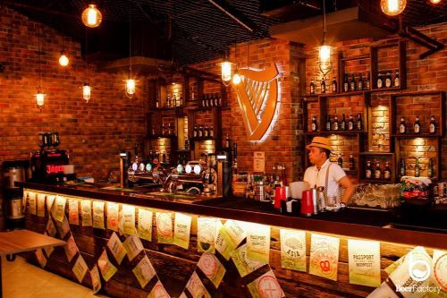
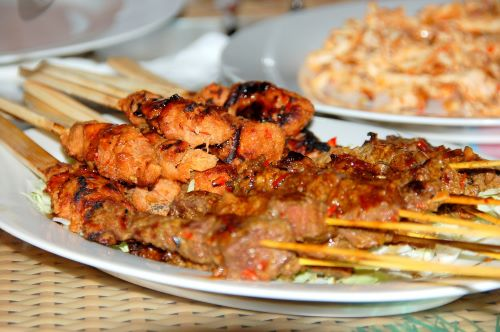

Whether you're a fan of a nightlife, a foodie, or a nature enthusiast, there's a Kuala Lumpur private tour for you!


Malaysia has a wide variety of cuisines, and it even created its own fusion blends
that are unique and unforgettable. Give it a try and you might never want to leave!
 The best way to discover KL's natural beauty is by hiking, which is a great way to
experience the city's nature and there are trails for every level of hiker.
The best way to discover KL's natural beauty is by hiking, which is a great way to
experience the city's nature and there are trails for every level of hiker.